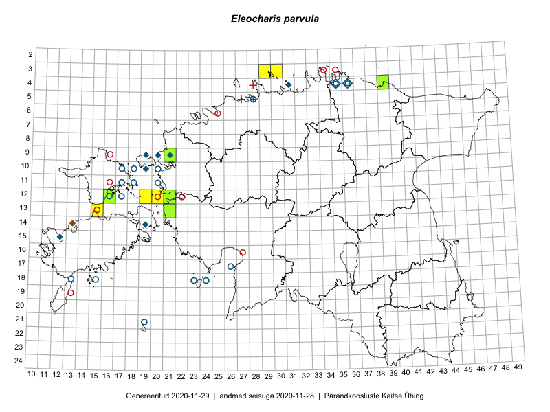

Eleocharis parvula
Uuendatud: 2016-12-02
Kaardile koondatud taksonid: Eleocharis parvula (Roem. & Schult.) Link ex Bluff, Nees & Schauer

Kaart põhineb 8 vaatlusel. Taksonit on leitud 7 ruudust.
Viited andmebaasikirjetele
- Toomas Kukk, Eerik Leibak: 2015-08-10: 13-15: GPS punkt
- Toomas Kukk, Eerik Leibak: 2015-08-10: 13-15: ala
- Ott Luuk: 2014-07-25: 12-19: GPS punkt
- Ott Luuk: 2014-07-24: 12-20: ala
- Tiit Hallikma, Toomas Kukk: 2015-08-27: 12-21: ala
- Tõnu Feldmann, Katrit Karus: 2015-07-31: 16-32: ala
- Mari Reitalu, Tõnu Ploompuu, Ott Luuk, Peedu Saar: 2014-06-01: 03-30: ala
- Ott Luuk, Mari Reitalu, Tõnu Ploompuu: 2014-06-01: 03-29: ala